Backdrop CMS
Past and Future

Where we are Today
Backdrop CMS is 5 years old
Since Backdrop 1.0
15 versions released
Backdrop History
6 years ago...
The Fork and "Manifesto"
Sept 10, 2013 - GitHub Fork Created
Sept 12, 2013 - Manifesto Published
(Not recommended. Explanation first, THEN fork.)
The Manifesto

Points of the Manifesto
- Preserving Drupal Audience
- Product for End-Users
- Different Release Cycle
- Call to Contribute (on GitHub)
Early Infrastructure
April 1, 2014: BackdropCMS.org launch on Drupal 7
May 27, 2014: Initial API website on Drupal 7

Design Work
Feb 27, 2014: Logo is created
(Designer: Darius Garza)

Nov 11, 2014: Drop hatches!
(Illustrator: Marc Movino)
Backdrop 1.0
After 15 months development Backdrop 1.0 released
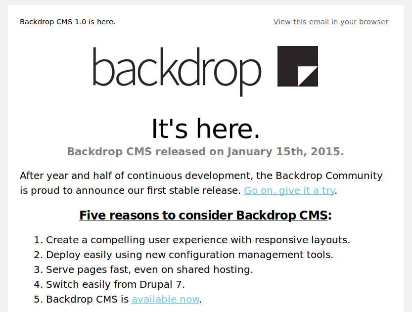Backdrop 1.0
Drupal compatibility layer
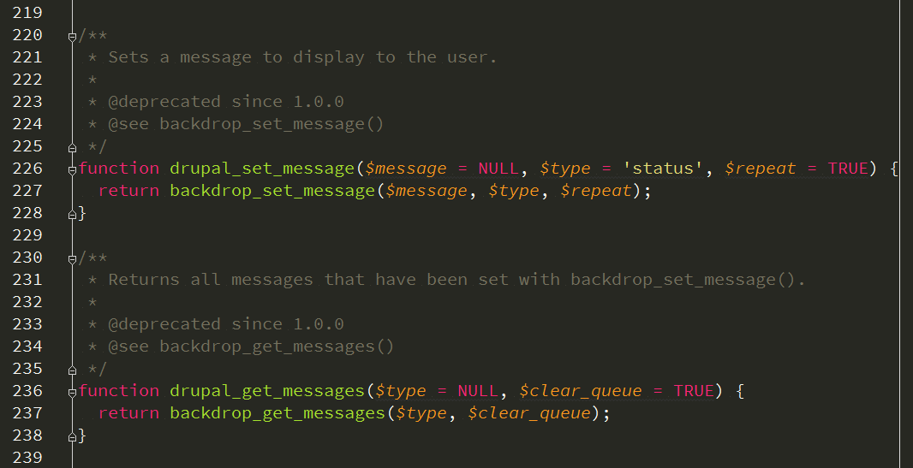Backdrop 1.0
New Layout System
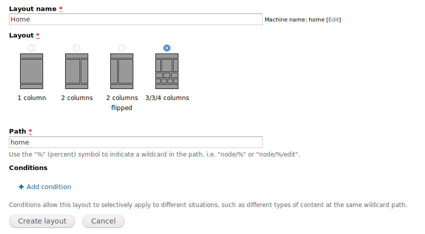New Configuration Management System
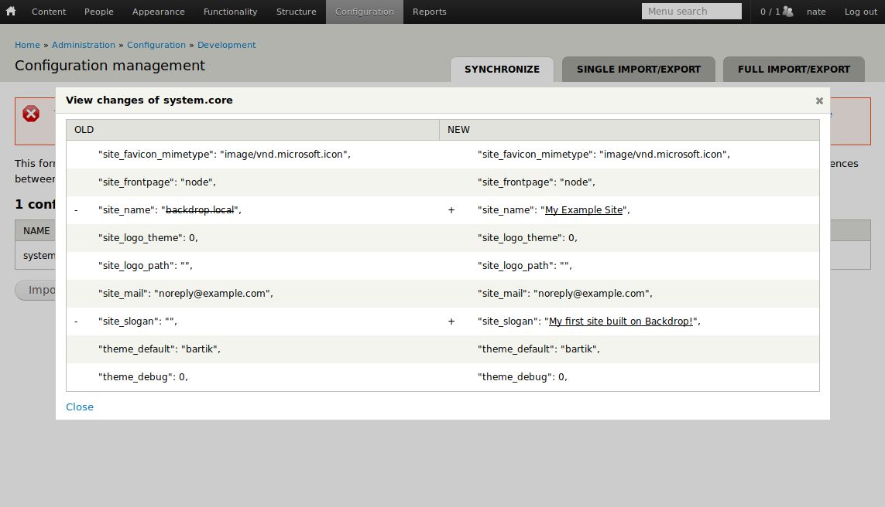Backdrop 1.0
Views Module Built-in
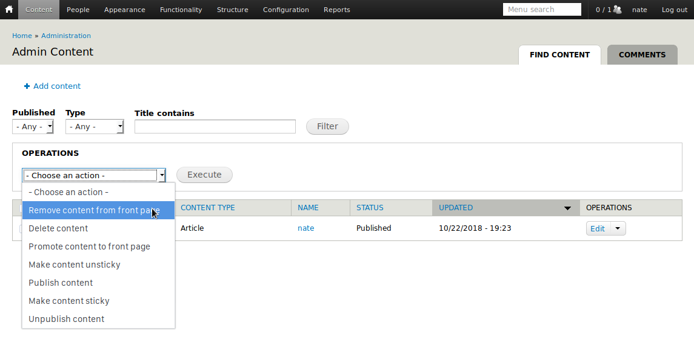Global Dialog System
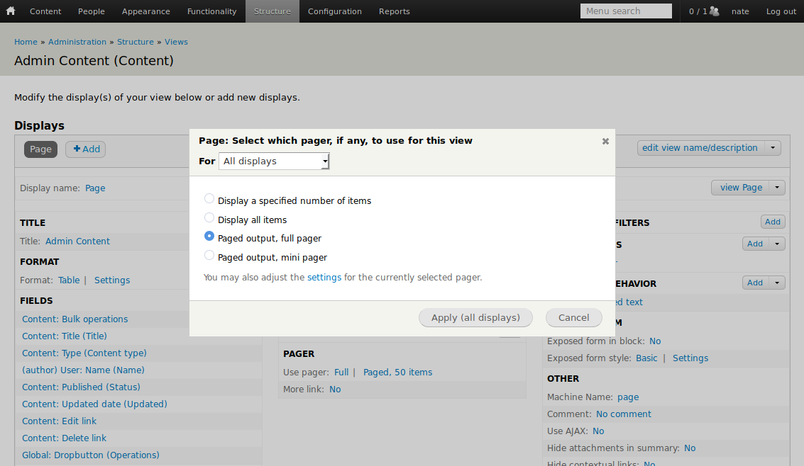Our sites upgraded to Backdrop
Jan 24, 2015 -- API website upgraded
Feb 12 2015 -- BackdropCMS.org upgraded
(Within 2 months of Backdrop 1.0 release - infrastructure sites upgraded)
Backdrop 1.1
released May 15, 2015
Backdrop 1.1
Updated Admin Theme
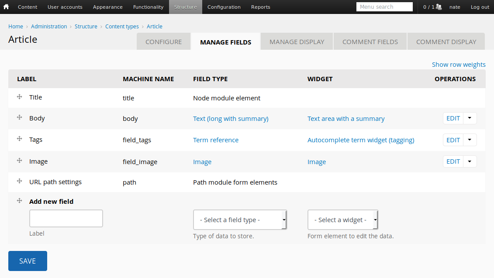Backdrop 1.1
Tokens and Token UI added
Token module in D7
Automatic path aliases added
Pathauto module in D7
Backdrop 1.2
released Sept 15, 2015
Backdrop 1.2
Vertical tabs made responsive

Backdrop 1.2
- A Rich-Text editor added to core
CKeditor / WYSIWYG modules in D7 - Link module added into core
- Email module added into core
- Date, Date Views, Date API and Date Popup modules moved into core
Backdrop 1.2
First release that uses BackdropCMS.org packager

Backdrop 1.3
released Jan 15, 2016
The first "User Experience Release"
Backdrop 1.3
- Transliteration module added to core
- Individual blocks for each field
Field as Block module for D7 - UX: Custom text (config) blocks
- UX: Login with email address possible
Email Registration module in D7* - UX: Horizontal admin tabs made responsive
- UX: Improved interface for multi-values fields
- 25+ other UX improvements
Backdrop 1.3
Content type forms
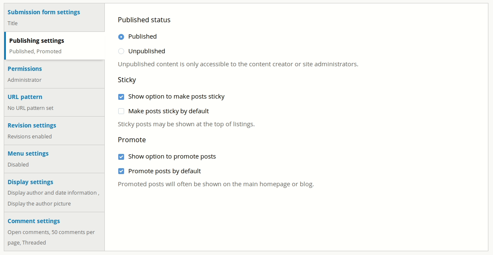Backdrop 1.3
Notification icon
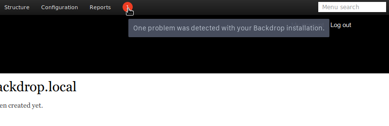Backdrop 1.3
Background fetch for faster page cache
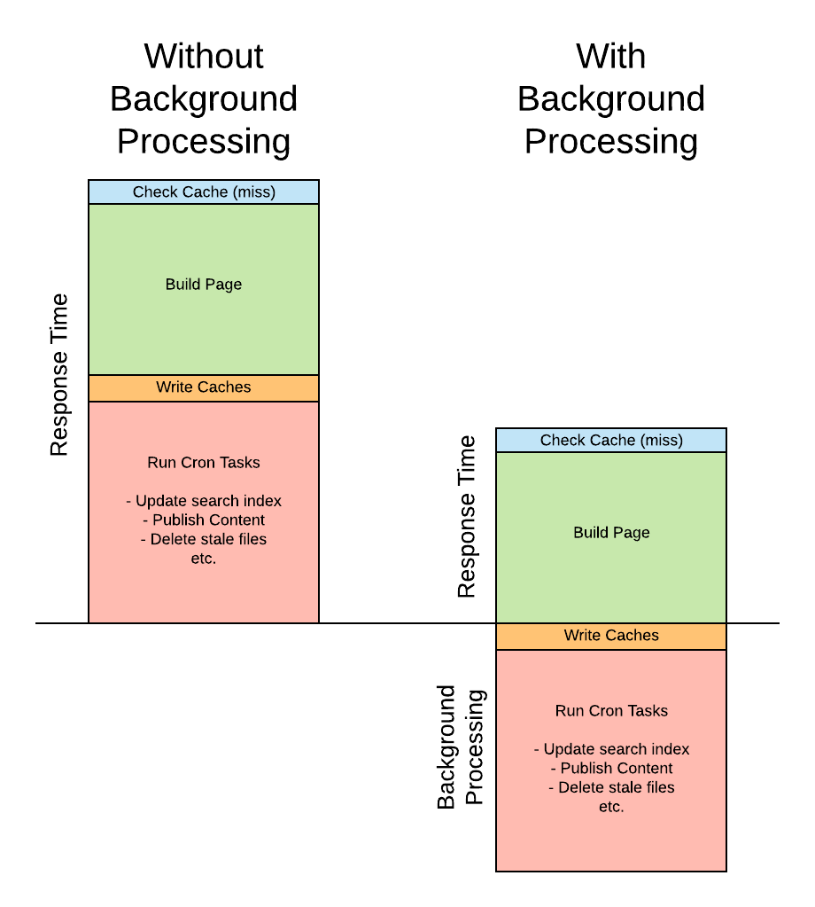Project Management Committee
Formed Feb 18, 2016

Backdrop 1.4
released May 15, 2016
Backdrop 1.4
Installer module added to core
Project Browser module in D7
Backdrop 1.4
10 new layout templates (backwards compatible)
Radix Layouts module in D7
Backdrop 1.4
- Redirect module added to core
- More menu features added to blocks
Menu Block module in D7 - Mobile device camera support merged
Image Mobile Camera module in D7
Backdrop 1.5
released Sept 15, 2016
Backdrop 1.5
New front-end theme & Hero block type
Btester Custom Block Content in D7*
Backdrop 1.5
Responsive dropdown menus
Smartmenus / Nice Menus / Superfish modules in D7
Backdrop 1.5
- Default homepage layout
- Existing content block
Node Block in D7 - Emoji support in the database (w upgrade path!)
Backdrop 1.6
released Jan 15, 2017
Backdrop 1.6
Files become more complete entities
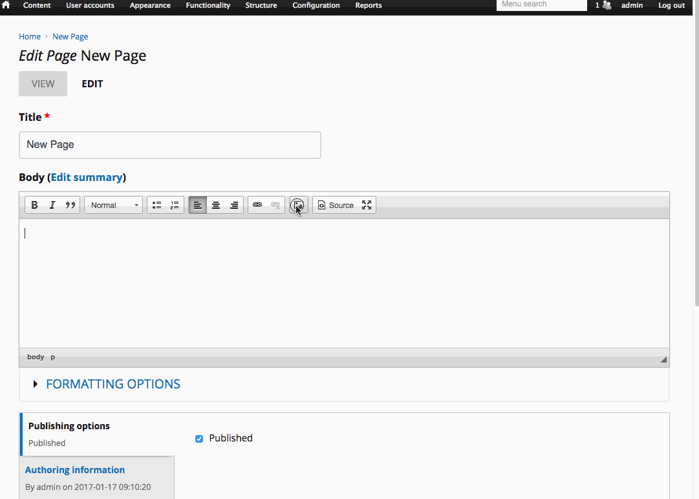Backdrop 1.6
Mobile friendly menu (hamburger) in core
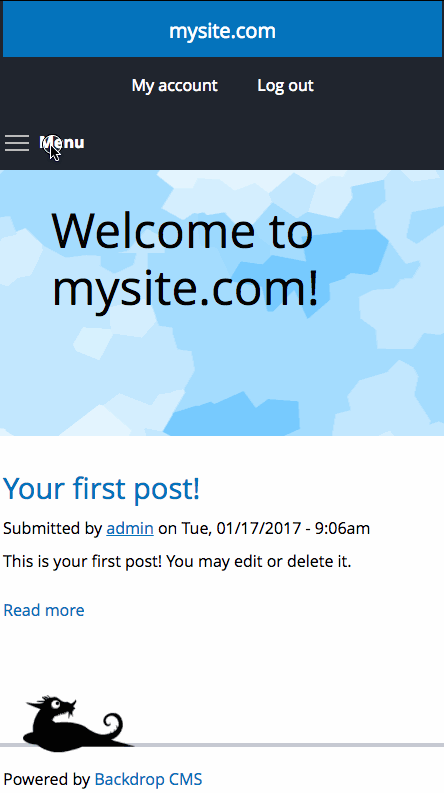Translation support
Feb 9, 2017: localize.backdropcms.org created
Initial work to translate BackdropCMS admin interfaces

Silkscreen
Feb 12, 2017

The Pressflow of Backdrop, specializing in large-scale Backdrop, and database compatbility.
Backdrop 1.7
released May 15, 2017
Backdrop 1.7
Link to existing content via Rich-Text editor
LinkIt / CKEditor Link modules in D7
Backdrop 1.7
Images may be uploaded through copy/paste
Direct Upload module in D7
Backdrop 1.7
- New Status report design
- Layout improvements:
- Views block displays get per-placement settings
Views content ctools module in D7 - Titles, tabs, messages, and action links are blocks
Blockify module in D7
- Views block displays get per-placement settings
Backdrop 1.8
released Sept 15, 2017
The 2nd User Experience release
Backdrop 1.8
Progress bar design
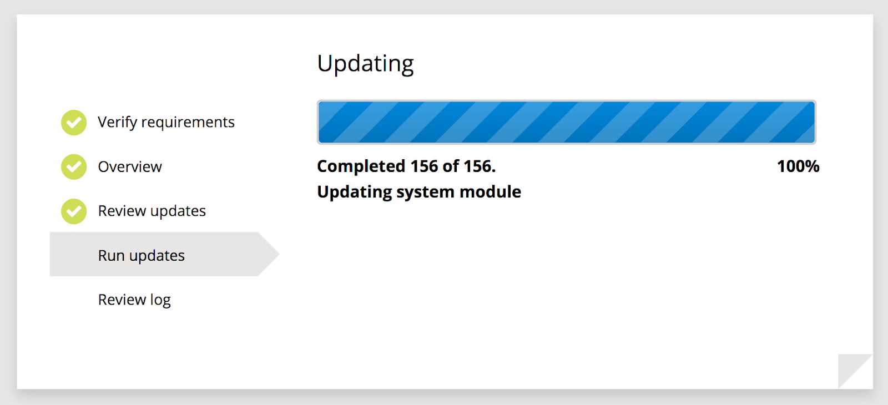Configuration diff design
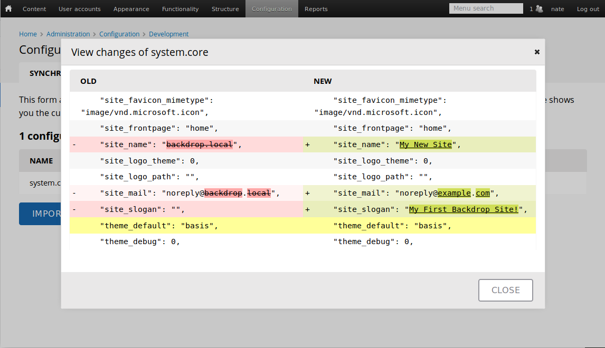Backdrop 1.8
Installer gets screenshots
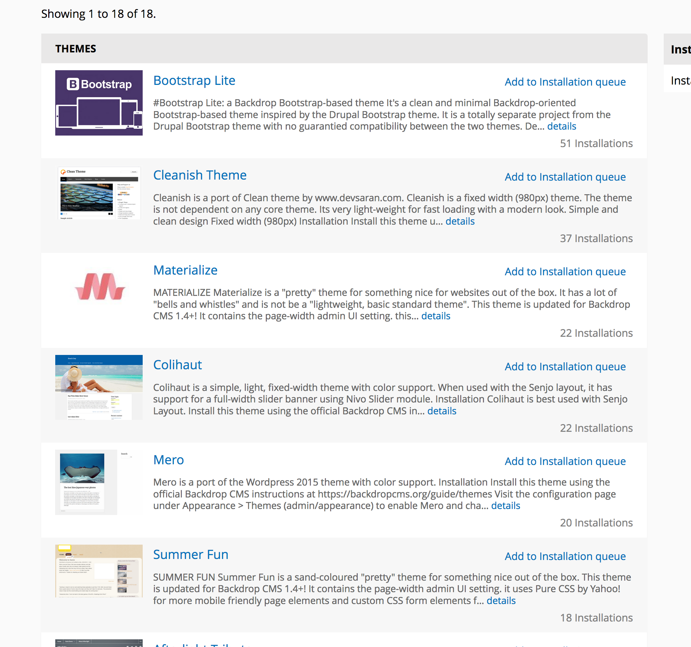Admin page gets icons
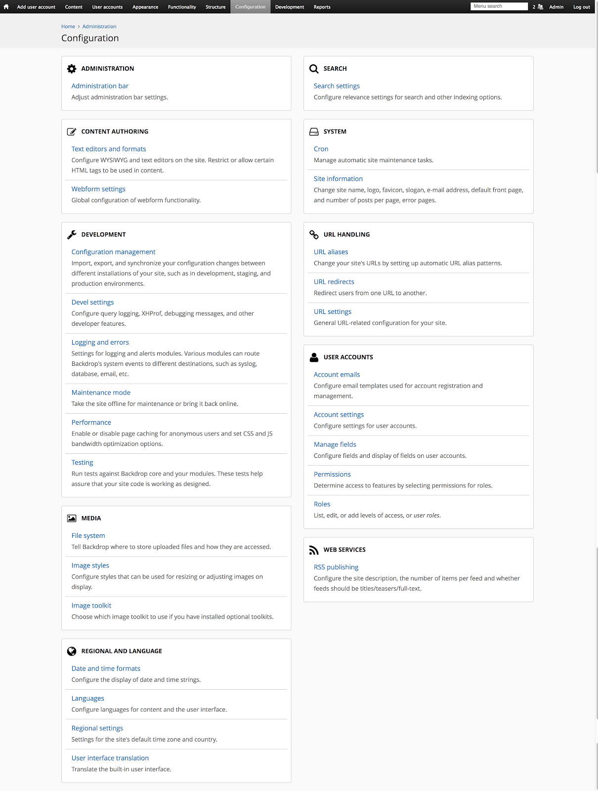Backdrop 1.9
released Jan 15, 2018
Backdrop 1.9
File entities get the ability to replace files in place
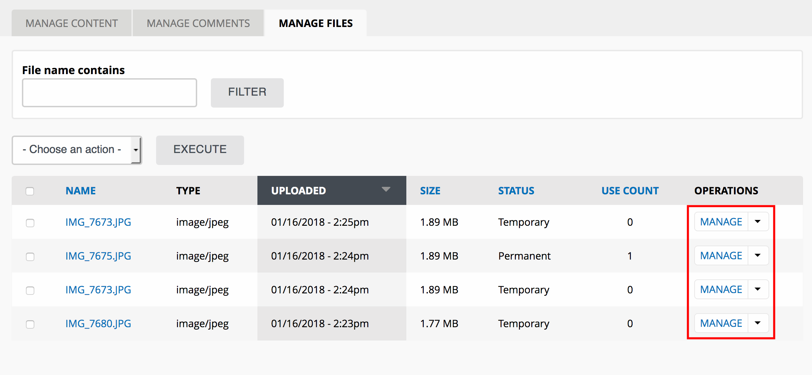Backdrop 1.9
- Login system redirects sanely
Login Redirect* or Login Destination* modules in D7 - 404 pages not in the error log
Fast 404 module* in D7 - New Status report design
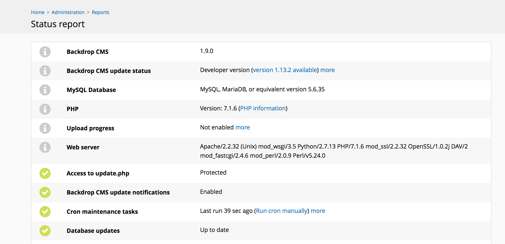
Backdrop 1.10
released May 15, 2018
Backdrop 1.10
Comment auto-closing
Comment Closer module in D7
Backdrop 1.10
Scheduled publishing
Scheduler module in D7
Backdrop 1.10
- Inline file uploading (in addition to images)
CKeditor Upload module in D7 - Translatable menu items
Menu Translation module in D7 - Translatable blocks
i18n module in D7
Backdrop 1.11
released Sept 15, 2018
Backdrop 1.11
New Color module UI, Basis colorized
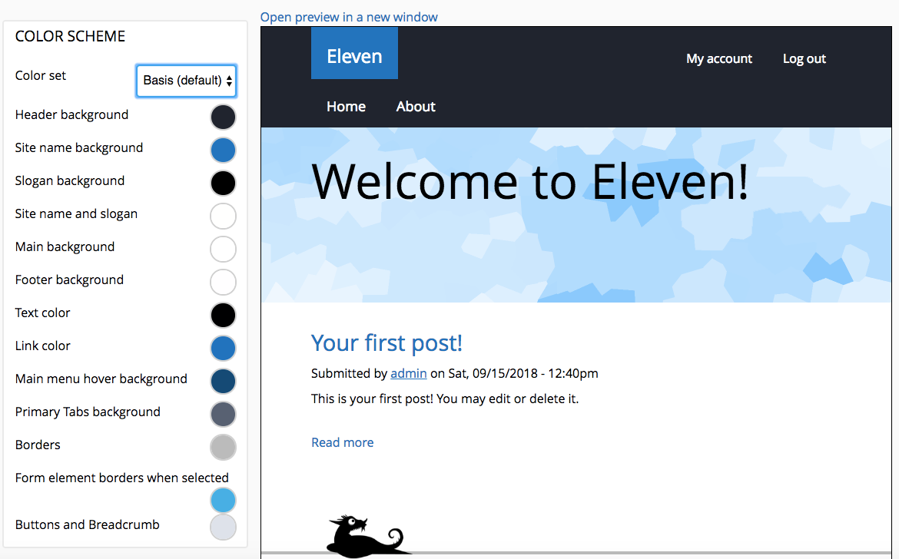Backdrop 1.11
Image Browser
CKEditor Media Browser* in D7
Backdrop 1.11
Content Preview (works with Layouts!)
Live Preview and Page preview in D7
Backdrop 1.11
- Hidden Paths for Content
Rabbit hole module in D7 - Contact module improvements
- Client-side upload progress bars
- Ability for Backdrop core to update itself (hidden)
Backdrop 1.12
released Jan 15, 2019
Backdrop 1.12
Core self-updates from the UI
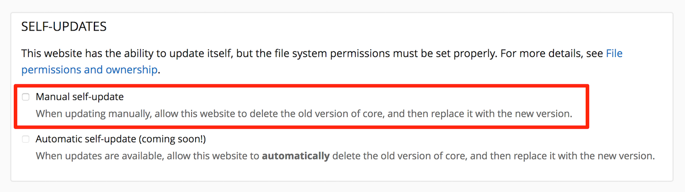Backdrop 1.12
Better UI for defining field options
Options Element module in D7
Backdrop 1.12
Icons added into the admin bar
Admin menu in D7*
Backdrop 1.12
- Contact block
Btester Custom Block Content in D7 - Translatable taxonomy terms
i18n / entity translation modules in D7 - CSS grid (for views grid)
- UX: Module page improvements
Backdrop 1.13
released May 15, 2019
Backdrop 1.13
Dashboard module in core
Total Control / Dashboard module in D7
Backdrop 1.13
- Support for PHP 7.3
- Content Blocks associate translations automatically
- UX: Interface for adding Link attributes
- UX: Vertical tabs on Taxonomy term edit pages
- UX: A Vertical tab for multilingual settings
September 2019
We've been working on...
Backdrop 1.14
Sept 15, 2019
- Fieldable file types
- Custom Layout Builder UI
- New Installs include an Editor Role
- Security improvement: support for trusted_host_patterns
Backdrop Future
Backdrop 1.15
- Improved Media Management and UI
- Package Signing (more prep for auto-updates)
- Recent News Block
Backdrop 1.x
- Automatic core updates
- Central configuration translation
- Reference field in core
- More!
Backdrop 2.0
Not before November 2023
Backdrop 2.0
Remove @deprecated
Backdrop/Drupal 9vs
API breaks
all previousDrupal versions
Questions?
Backdrop CMS
You know where it came from.
Now you know where it's going.